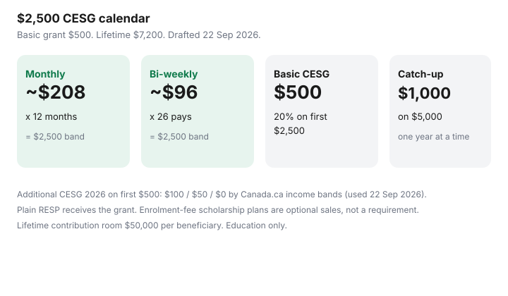

Personal Finance · Canada
Build a $2,500 RESP Contribution Calendar That Hits CESG Without Cash Crunch
Basic CESG pays 20% on the first $2,500 contributed in a year for an eligible beneficiary — $500 — up to a lifetime grant ceiling of $7,200. Parents miss the grant because $2,500 feels like one December wound. A calendar turns it into about $208 a month or about $96 bi-weekly without a scholarship-plan sales appointment.
This page builds that calendar, covers catch-up without starving cashflow, notes family versus individual plans at a high level, and rejects enrolment-fee products. Education only. Canada.ca / CRA RESP and CESG materials were used 22 Sep 2026.
Disclosure: Banking and RESP-provider offers are offer types only. Saving Optimizer may later add partner links. We do not currently claim issuer partnerships. We do not promote group scholarship plans with heavy enrolment fees. Education only — not investment advice.
Key takeaways
- Basic CESG: 20% of the first $2,500 per beneficiary per year = $500; lifetime grant ceiling $7,200.
- About $208 monthly or $96 bi-weekly reaches the basic band without a lump-sum panic.
- Catch-up is generally one missed year at a time: up to $1,000 basic grant on $5,000 contributed.
- 2026 additional CESG bands on the first $500: $100 / $50 / $0 by adjusted family net income thresholds on Canada.ca (used 22 Sep 2026).
- Refuse enrolment-fee scholarship plans when a plain RESP receives the same grant.
CESG annual basics tied to the $2,500 contribution rhythm (verify at draft)
Employment and Social Development Canada pays basic CESG into the RESP. Contributions are not tax-deductible. Grant and growth are taxed to the student when paid as Educational Assistance Payments. Canada.ca’s estimating-amounts page, used 22 Sep 2026, also describes additional CESG on the first $500 contributed: 20% ($100) if adjusted family net income is under $58,523; 10% ($50) from $58,523 to $117,045; none above. File the primary caregiver’s return so the income test can run.
Lifetime contributions per beneficiary generally cannot exceed $50,000. There is no small annual contribution cap, which is how families overshoot lifetime room before grants finish. Deeper grant mechanics: capture the CESG. Bond-only households: Canada Learning Bond.

Monthly vs lump contribution calendars
| Cadence | Transfer | Basic CESG if rules met |
|---|---|---|
| Monthly (12) | About $208 | $500 on the $2,500 band |
| Bi-weekly (26) | About $96 | $500 on the $2,500 band |
| Semi-monthly (24) | About $104 | $500 on the $2,500 band |
| Lump in one month | $2,500 | $500 — only if cashflow survives the lump |
Start the PAD the business day after payday. If you begin in July, divide $2,500 by the pays left. A December top-up works. A December panic after eleven months of silence is optional.
Catch-up grants without starving cashflow
Unused basic CESG can generally be caught up one missed year at a time: up to $1,000 of basic grant on $5,000 of contributions in a later year. That is about $417 a month for twelve months — still a plan, still not a reason to empty the HISA. Additional CESG does not carry forward the same way. Lifetime grant remains $7,200.
If $417 breaks the month, catch the current $500 band first ($208), then add catch-up in a later year when hours stabilize. Idle grant room is cheaper than groceries on a 21% card.
Family vs individual plan notes at a high level
An individual RESP names one beneficiary. A family RESP can name more than one related beneficiary. Earnings may be shareable among siblings in a family plan; each child still has a personal $7,200 CESG lifetime limit. Additional CESG and the Learning Bond stay tied to the child who qualified. Ask the provider in writing which grants the account can receive before the first PAD leaves.
Avoid sales-driven RESP products
The grant arrives in a bank, credit union, or brokerage RESP as surely as it arrives in a group scholarship plan. Group plans often take an enrolment fee from early contributions and restrict exits. If the fee rivals the first year’s $500 grant, you are paying for distribution. Read the fee schedule. You do not need a kitchen-table contract to receive CESG.
A 12-month CESG contribution calendar
- Month 0: Open a plain RESP. Refuse enrolment-fee pressure. Confirm SIN and grant forms.
- Months 1–12: PAD about $208 (or your catch-up amount) after payday. Log each contribution.
- Each statement: Match basic CESG (~$500 on $2,500) and any additional CESG ($50 or $100) to contributions.
- November: If the year is short, top up only to the band you intended — not past the $50,000 lifetime contribution limit.
- January: Reset the calendar. Review whether catch-up room exists. Re-check caregiver tax filing for additional CESG.
Sources & date stamps
- Canada.ca — how much money can be added to an RESP; 2026 additional CESG income bands; CLB cross-reference (used 22 Sep 2026).
- CRA / ESDC — basic CESG 20% on first $2,500 ($500), lifetime $7,200, catch-up up to $1,000 on $5,000; lifetime contributions $50,000 per beneficiary.
Frequently asked questions
Do I need $2,500 in December to get the grant?
No. Contributions across the year that total $2,500 for the beneficiary generally attract the same $500 basic CESG when rules are met. About $208 a month is enough for the basic band.
Can I catch up three missed years in one cheque?
Basic catch-up is generally limited to one additional year’s grant at a time — up to $1,000 total basic CESG on $5,000 in a later year — not three years at once.
Does a family RESP increase the $7,200 lifetime CESG?
No. Each beneficiary keeps a personal $7,200 lifetime CESG limit even inside a family plan.
Is a group scholarship plan required for CESG?
No. Plain bank, credit union, and brokerage RESPs can receive CESG. Compare fees before you sign an enrolment contract.
What if $208 a month still breaks cashflow?
Open for the Canada Learning Bond if you qualify, keep the HISA buffer, and return to the $500 band when hours stabilize. Do not fund the RESP with a revolving card.